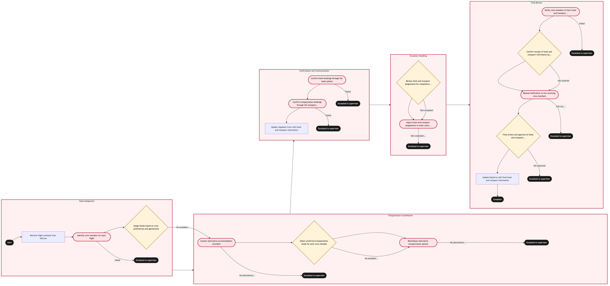

Updated 2026-08-21
Crew Hotel and Transport Coordination
Process flow
Click to zoom

Process steps
▼
Phase 1 — Hotel Assignment
3 steps
| Step | Activity | Role | System | Input | Output | KPI | Dec | Exc | Pain point |
|---|---|---|---|---|---|---|---|---|---|
| 1.1 | Retrieve flight schedule from NetLine | YYZ Operations Control Duty Manager | Lufthansa Systems NetLineB | Scheduled flights for the day | Flight schedule data | Schedule retrieval time < 5 minutes | N | N | Delays in NetLine system updates can affect initial schedule accuracy. |
| 1.2 | Identify crew members for each flight | Aeroplan Member Services Agent | Jeppesen CrewB | Flight schedule data | Crew pairing information | Crew identification within 10 minutes of schedule retrieval | N | Y | Incorrect crew pairings can lead to union grievances and operational disruptions. |
| 1.3 | Assign hotels based on crew preferences and agreements | Aeroplan Member Services Agent | Jeppesen CrewB | Crew pairing information, hotel availability data | Hotel assignments | Hotel assignments completed within 15 minutes | Y | N | Overbooking or limited hotel options can cause crew dissatisfaction. |
▼
Phase 2 — Transportation Coordination
3 steps
| Step | Activity | Role | System | Input | Output | KPI | Dec | Exc | Pain point |
|---|---|---|---|---|---|---|---|---|---|
| 2.1 | Contact alternative accommodation providers | Aeroplan Member Services Agent | Hotel Booking SystemU | Crew pairing information, hotel availability data | Alternative hotel options | Alternative hotels identified within 30 minutes | N | Y | Limited alternative options may cause delays in crew deployment. |
| 2.2 | Select preferred transportation mode for each crew member | YYZ Operations Control Duty Manager | DayforceB | Crew pairing information, travel time data | Transportation assignments | Transportation assignments completed within 10 minutes | Y | N | Incorrect transportation choices can lead to delays or missed flights. |
| 2.3 | Reschedule alternative transportation options | YYZ Operations Control Duty Manager | DayforceB | Crew pairing information, travel time data | Revised transportation assignments | Transportation rescheduling within 20 minutes | N | Y | Continuous rescheduling can disrupt crew schedules and increase operational costs. |
▼
Phase 3 — Confirmation and Communication
3 steps
| Step | Activity | Role | System | Input | Output | KPI | Dec | Exc | Pain point |
|---|---|---|---|---|---|---|---|---|---|
| 3.1 | Confirm hotel bookings through the hotel system | Aeroplan Member Services Agent | Hotel Booking SystemU | Hotel assignments | Confirmed hotel reservations | Hotel bookings confirmed within 5 minutes | N | Y | Booking failures can cause crew delays and dissatisfaction. |
| 3.2 | Confirm transportation bookings through the transport system | YYZ Operations Control Duty Manager | Transport Booking SystemU | Transportation assignments | Confirmed transportation reservations | Transport bookings confirmed within 10 minutes | N | Y | Booking failures can disrupt crew travel schedules. |
| 3.3 | Update Jeppesen Crew with hotel and transport information | Aeroplan Member Services Agent | Jeppesen CrewB | Confirmed hotel and transportation reservations | Updated crew records | Updates completed within 5 minutes | N | N | Delayed updates can lead to confusion among crew members. |
▼
Phase 4 — Exception Handling
2 steps
| Step | Activity | Role | System | Input | Output | KPI | Dec | Exc | Pain point |
|---|---|---|---|---|---|---|---|---|---|
| 4.1 | Review hotel and transport assignments for compliance with union agreements | APPR Adjudicator | Jeppesen CrewB | Updated crew records, union agreement rules | Compliance status report | Review completed within 10 minutes | Y | N | Non-compliant assignments can lead to legal action and operational disruptions. |
| 4.2 | Adjust hotel and transport assignments to meet union compliance | APPR Adjudicator | Jeppesen CrewB | Updated crew records, union agreement rules | Adjusted crew assignments | Adjustments completed within 15 minutes | N | Y | Continuous adjustments can disrupt the final schedule. |
▼
Phase 5 — Final Review
5 steps
| Step | Activity | Role | System | Input | Output | KPI | Dec | Exc | Pain point |
|---|---|---|---|---|---|---|---|---|---|
| 5.1 | Notify crew members of their hotel and transport arrangements | Aeroplan Member Services Agent | Crew Communication SystemU | Finalized crew assignments | Notification sent to crew members | Notifications sent within 5 minutes | N | Y | Failed notifications can lead to missed flights and operational delays. |
| 5.2 | Confirm receipt of hotel and transport information by crew members | Aeroplan Member Services Agent | Crew Communication SystemU | Notification sent to crew members | Confirmation of receipt | Confirmations received within 10 minutes | Y | N | Unconfirmed notifications can lead to unresolved issues and operational disruptions. |
| 5.3 | Resend notification to non-receiving crew members | Aeroplan Member Services Agent | Crew Communication SystemU | Finalized crew assignments | Notification resent to crew members | Notifications resent within 5 minutes | N | Y | Continuous resending can disrupt the final schedule. |
| 5.4 | Final review and approval of hotel and transport assignments | YYZ Operations Control Duty Manager | Jeppesen CrewB | Finalized crew assignments, compliance report | Approval status | Review completed within 10 minutes | Y | N | Non-approved assignments can lead to operational delays and dissatisfaction. |
| 5.5 | Update Dayforce with final hotel and transport information | YYZ Operations Control Duty Manager | DayforceB | Finalized crew assignments | Updated schedule in Dayforce | Updates completed within 5 minutes | N | N | Delayed updates can lead to confusion among operational teams. |
Swim lanes
YYZ Operations Control Duty Manager1.1 2.2 2.3 3.2 5.4 5.5
Aeroplan Member Services Agent1.2 1.3 2.1 3.1 3.3 5.1 5.2 5.3
APPR Adjudicator4.1 4.2
Systems touched
Lufthansa Systems NetLineBJeppesen CrewBHotel Booking SystemUDayforceBTransport Booking SystemUCrew Communication SystemU
Key performance indicators
- Hotel assignments completed within 15 minutes
- Transportation assignments completed within 10 minutes
- Hotel bookings confirmed within 5 minutes
- Transport bookings confirmed within 10 minutes
- Updates completed within 5 minutes
Risks and control points
- Incorrect crew pairings leading to union grievances
- Limited hotel options causing crew dissatisfaction
- Continuous rescheduling of transportation disrupting schedules
- Non-compliant assignments leading to legal action
- Failed notifications causing missed flights and operational delays
Air Canada Process Wiki — process and systems reference compiled from public sources
for IT Application Management and User Support pre-sales discovery.
Built 2026-08-21. Every system carries an evidence tier: tier C is an industry pattern and tier U is an open
question, and neither should be asserted as fact about Air Canada without confirmation in discovery.
Not affiliated with or endorsed by Air Canada. Air Canada, Aeroplan and Altitude are trademarks of Air Canada.